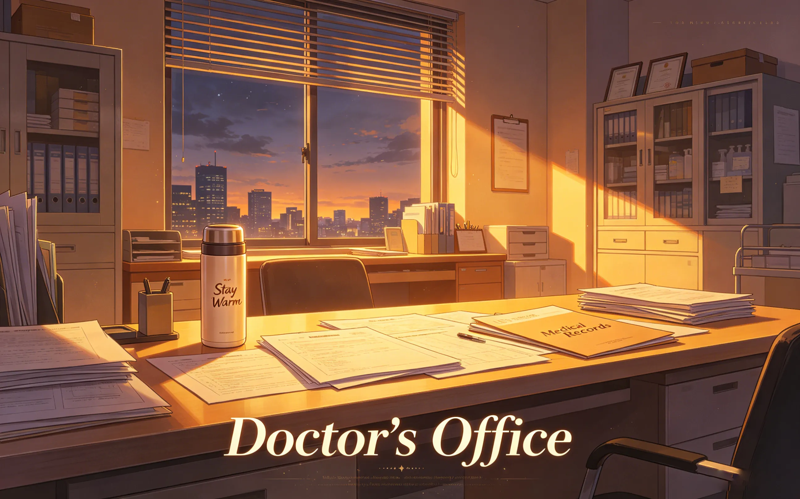
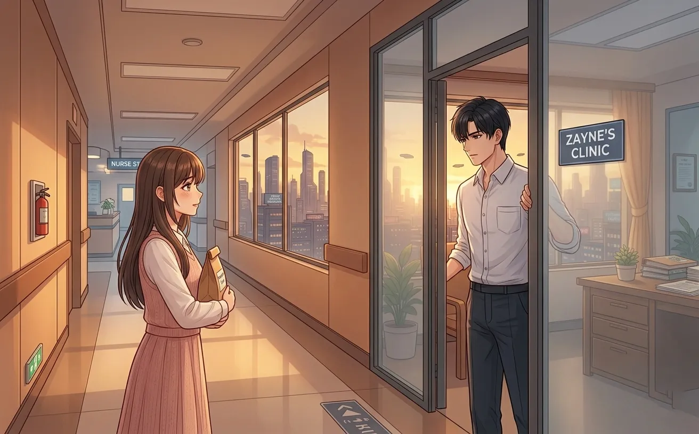
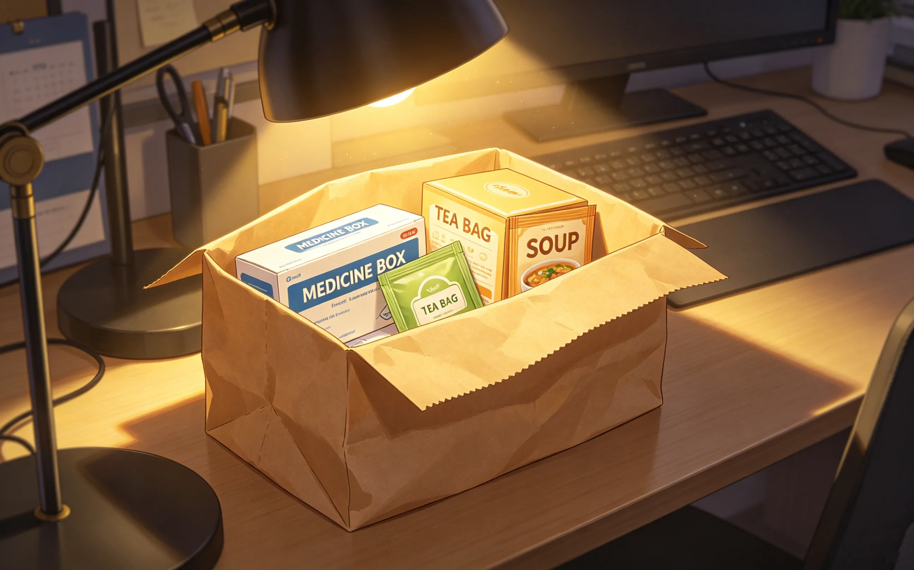
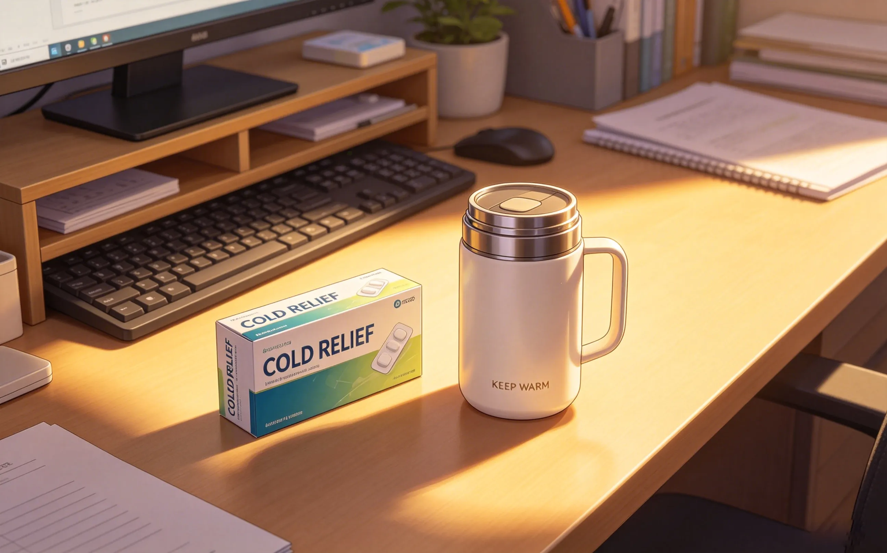
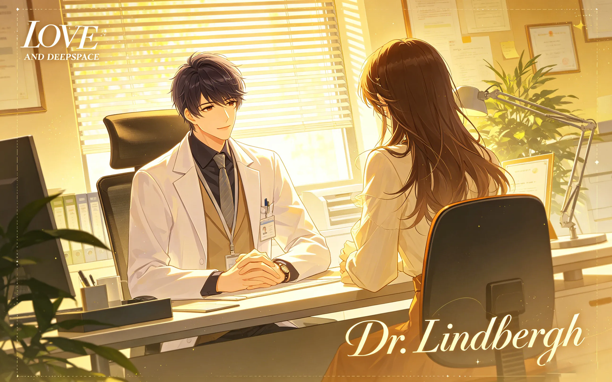
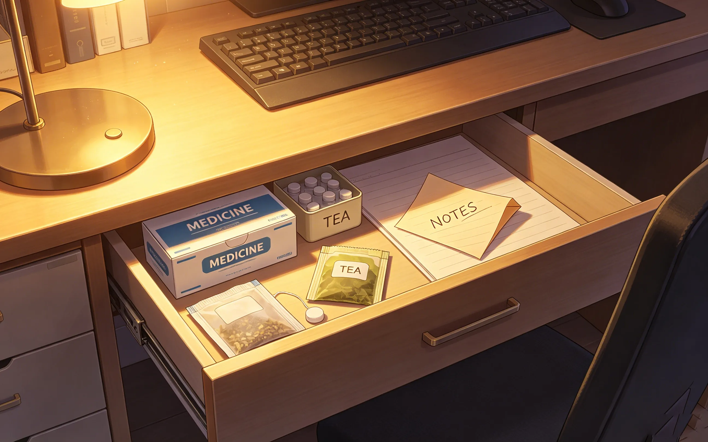
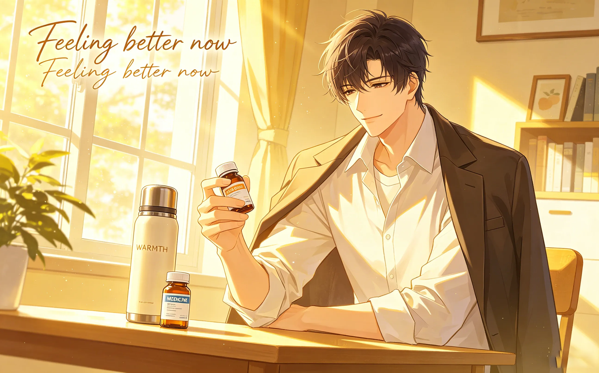
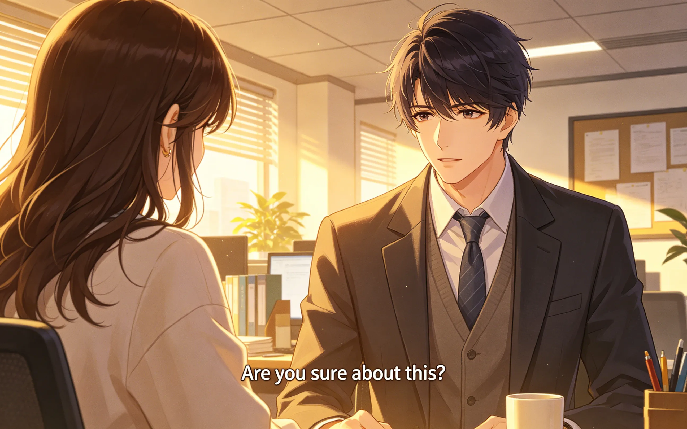
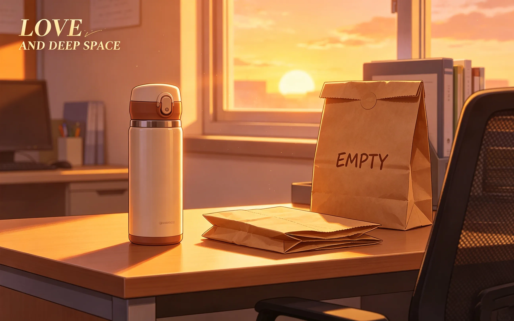

zayne was always the one giving medicine. prescriptions. advice. care. he never took any himself. then she showed up at the hospital with a paper bag and a look that said 'you're not fine.'
zayne never got sick.
that's what he told himself. that's what everyone believed. the chief of surgery. the man who never took a day off. the doctor who always showed up, even when he shouldn't.
he was fine. he was always fine.

it started on a monday. a scratch in his throat. nothing serious.
he ignored it.
tuesday. his nose was stuffy. his head ached. he had surgery in an hour. he ignored it.
wednesday. he was coughing. the nurses noticed. asked if he was okay. he said he was fine.
thursday. he wasn't fine.
he had back-to-back surgeries. a consult. three sets of charts. he didn't have time to be sick. so he wasn't.
he took two painkillers from the supply closet. dry swallowed them. kept working.
he didn't tell anyone. not because he was embarrassed. because he didn't know how to be the patient.
there was a difference, he had learned over the years, between being a doctor and being a person. doctors didn't get sick. doctors didn't take breaks. doctors didn't need anyone to take care of them.
it was a lie, of course. he knew it was a lie. but he had been telling it for so long that he almost believed it.

she came on thursday afternoon. her usual time. his door was open. it was always open now.
she sat in her chair. the one she had claimed months ago. the one he thought of as hers.
she didn't say anything at first. just looked at him. the way she always did. like she was reading something behind his eyes.
"you look terrible," she said finally.
"i'm fine."
"you're not."
he didn't argue. he didn't have the energy.
"have you eaten?" she asked.
"i had coffee."
"that's not food."
"it's fuel."
she stared at him. "you're impossible."
he shrugged. coughed. tried to hide it. failed.
she stood up. "i'll be back."
"you don't have to—"
she was already gone.
he sat there, looking at the empty doorway. the chair where she had been sitting. the space she left behind.
he should have been relieved. instead, he felt something he couldn't name. something like loneliness. something like being seen.

she came back twenty minutes later. carrying a paper bag.
"what's that?" he asked.
"medicine."
"i'm a doctor. i can prescribe my own—"
"you haven't."
she set the bag on his desk. started pulling things out. cold medicine. throat lozenges. tea bags. a small container of soup.
he stared at the items. at the soup. at the medicine. at her.
"i didn't ask for this."
"you never ask for anything. that's the problem."
"i don't need—"
"yes you do."
her voice was firm. not angry. not pitying. just certain. like she had decided something and wasn't going to let him argue.
he didn't know what to say. so he said nothing.
she opened the soup. set it in front of him. "eat."
he picked up the spoon. took a bite. it was warm. it was good.
he hadn't realized how hungry he was.

she watched him eat. didn't say anything. just sat there. in her chair.
when he finished the soup, she pushed the cold medicine toward him.
"take this."
"i don't need—"
"zayne."
her voice was soft. not demanding. not pleading. just... present.
"you take care of everyone else. let someone take care of you."
he looked at her. at the medicine. at the bag.
he took the pill. swallowed it. with water this time, not coffee.
she smiled. small. satisfied.
"see? that wasn't so hard."
he didn't tell her it was the hardest thing he'd done all week.
he didn't tell her that taking the pill felt like admitting something. like letting down a wall he had been building for years.
he didn't tell her that he couldn't remember the last time someone had taken care of him. that he wasn't sure anyone ever had.
he just sat there. in the silence. with the empty soup container and the paper bag and her, sitting in her chair, watching him like he mattered.
she came back the next day. and the day after that.
more soup. different kinds. chicken. vegetable. something with ginger that made his throat feel better.
"did you make these?" he asked.
"does it matter?"
"yes."
she was quiet for a moment. "yes. i made them."
he looked at the soup. at her. at the bag.
"why?"
"because you needed someone to."
"i could have ordered takeout."
"you wouldn't have."
he couldn't argue with that. she was right. he would have worked through dinner. skipped it entirely. not noticed until his stomach hurt.
he had done it a hundred times before. a thousand.
but she noticed. she noticed everything.
he ate the soup. drank the tea. took the medicine.
he felt better. not just physically.
there was something about being cared for. something he had forgotten. something he hadn't known he was missing.

on the third day, he said something he had never said before.
"i don't know how to let people take care of me."
she looked up from her book. "i know."
"i've been taking care of myself for so long..."
"i know."
he was quiet. then: "thank you."
"for what?"
"for not letting me say no."
she smiled. "you needed it."
"i know."
it was the first time he had admitted that. to himself. to her. to anyone.
it felt strange. it felt good.
he had spent years building walls. years convincing himself that he didn't need anyone. that he was enough. that asking for help was weakness.
but sitting there, with her in his office, with the soup and the medicine and the quiet, he realized something.
maybe strength wasn't about doing everything alone. maybe strength was knowing when to let someone in.
he didn't say that out loud. he wasn't ready. but he thought it. and that was a start.

after she left, he opened his desk drawer.
not the locked one. the one with the old file. the one he never opened. a different drawer.
he put the extra cold medicine inside. the lozenges. the tea bags she had brought.
he didn't know why. maybe because he wanted to remember. maybe because he wanted to be prepared for next time.
maybe because she had given them to him.
he looked at the drawer. at the thermal bottle on his desk. at the chair where she sat.
his office felt different now. warmer. less empty.
he had always thought of his office as a workspace. a place to see patients. a place to finish charts. a place to hide.
but it had become something else. it had become a place where she sat. a place where he ate soup. a place where he took medicine and admitted that he needed help.
he closed the drawer. not locked. just closed.
he didn't need to hide it.
that night, he couldn't sleep.
not because of the cold. the cold was gone. the medicine had worked. he felt better.
but something else kept him awake. something he couldn't name.
he lay in bed, staring at the ceiling, thinking about the paper bag. the soup. the way she looked at him when she said "you need to let someone take care of you."
he had spent so long being the caretaker. the doctor. the one who fixed things. he had forgotten what it felt like to be on the other side.
he thought about his parents. about how they had never been around. about how he had learned to cook for himself, to clean for himself, to patch himself up when he fell.
he had been doing it for so long that he didn't know any other way.
but now, there was her. bringing him soup. bringing him medicine. sitting in his office like she belonged there.
he didn't know what to do with that. he didn't know what to do with her.
but he knew he didn't want her to stop.
he woke up early. earlier than usual.
he made coffee. not for work. for himself. he sat in his kitchen. drank it slowly. didn't rush.
he thought about what he would say to her. when she came today. if she came today.
he didn't know what to say. but he knew he wanted to say something. something real.
he went to the hospital. opened his office. sat at his desk.
the paper bag was gone. he had thrown it away. but the medicine was still in the drawer. the soup containers were in the trash. the memory was still there.
he waited. the clock ticked. the morning passed.
at eleven, she appeared in his doorway.
"you look better," she said.
"i feel better."
"good."
she walked to her chair. sat down. looked at him.
"no soup today?" he asked.
"you don't need it anymore."
he didn't know why that made him sad. he should have been relieved. he was fine. he didn't need her soup.
but he wanted it. he wanted her to keep coming. to keep caring. to keep noticing.
he didn't say that. he just nodded. and they sat there. in the silence. like they always did.

he got sick again. months later. a winter cold. nothing serious.
but this time, he didn't ignore it.
he texted her. "i'm sick."
she replied immediately. "on my way."
she came with soup. medicine. tea. the same paper bag. the same look.
"you told me," she said.
"i did."
"that's progress."
"maybe."
she sat in her chair. watched him eat. didn't say anything.
he took the medicine. drank the tea. felt better.
not just because of the medicine.
"thank you," he said.
"for what?"
"for coming."
"i'll always come."
he looked at her. at the soup. at the paper bag. at the way she sat in his chair like she had always been there.
"i know," he said.
and for the first time, he believed it.
he learned something that year.
that being the doctor didn't mean he had to be the patient. that being strong didn't mean being alone. that letting someone take care of him wasn't weakness.
it was trust.
it was letting her in.
it was opening the door — the office door, the desk drawer, something inside himself — and not slamming it shut.
he thought about all the years he had spent alone. the nights in the hospital. the empty apartment. the cold coffee and the cold bed and the cold, cold loneliness.
he hadn't known it was loneliness. he had called it independence. he had called it strength. he had called it whatever he needed to call it to keep going.
but now, with her, he saw it for what it was. he had been hiding. from himself. from everyone. from the possibility that someone might care.
and then she showed up. with a paper bag and a look that said "you're not fine" and a stubbornness that matched his own.
she didn't let him say no. she didn't let him pretend. she didn't let him disappear into his work and his charts and his endless, exhausting performance of being fine.
she saw him. the real him. the one who got sick and needed soup and didn't know how to ask for help.
and she stayed anyway.

"why do you keep coming back?" he asked her one day.
she looked up from her book. "because you keep letting me."
"i do, don't i."
"yes."
he thought about that. about the door he left open. about the chair that was always empty until she sat in it. about the way his office felt different when she was there.
"i don't know how to be taken care of," he said.
"i know."
"but i'm learning."
she smiled. "i know."
he didn't say anything else. he didn't need to. she already understood.
she always understood.

the paper bag is gone. he used the last of the medicine months ago.
but the drawer is still there. the thermal bottle is still on his desk. the chair is still hers.
she still comes. tuesdays and thursdays. sometimes more often.
she doesn't bring medicine anymore. not usually. just coffee. just herself. just the quiet presence that had become part of his office, part of his days, part of him.
he still gets sick sometimes. everyone does. but now, when he does, he doesn't hide it. he tells her. and she comes. with soup or tea or just a text that says "drink water."
it's not about the medicine anymore. it never was.
it was about being seen. being cared for. being loved, even if neither of them had said the word yet.
he looked at the drawer. at the thermal bottle. at the chair where she sat.
his office wasn't empty anymore. his life wasn't empty anymore.
because of a paper bag. because of soup. because of a woman who refused to let him be fine when he wasn't.
"do you remember the first time you brought me medicine?" he asked.
"you tried to refuse."
"i remember."
"you were terrible at being sick."
"i know."
she smiled. "you're better now."
he looked at her. at the office. at the drawer where he still kept a spare box of cold medicine, just in case.
"i had a good teacher."
she laughed. "that's the nicest thing you've ever said to me."
he didn't think it was that nice. but he was glad she thought so.